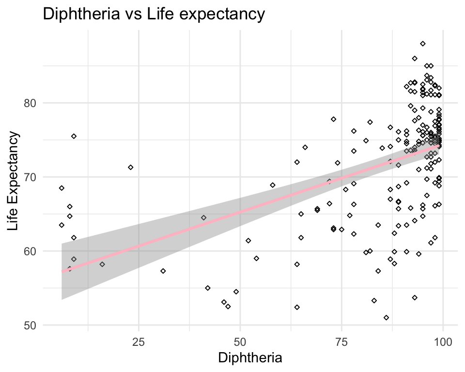

JSC370 2020: Midterm Project
Shi Tang
10/03/2022
How does immunization coverage affect life expectancy for year 2015?
A person’s life expectancy is a statistical measure of the average time is expected to live, based on several factors such as birth, age, and other demographic factors. Indeed, the United Nations estimates a global average life expectancy of 72.6 years for 2019 – which is higher than in any country back in 1950. Therefore, I am interested in exploring the impact of immunization coverage on life expectancy for the year 2015.
The data-set was from Kaggle https://www.kaggle.com/kumarajarshi/life-expectancy-who, and the original data related to life expectancy, health factors for 193 countries have been collected from WHO data repository website and its corresponding economic data was collected from United Nation website.
Methods
The data-set consists of 22 columns and 2938 rows. Since we are only interested in immunization coverage for the year 2015, we will only select the columns we need from the data-set.
Now, the data-set only contains 6 columns and 183 rows, including columns “Country”, “Year”, “Life expectancy”, “Hepatitis B”, “Polio” and “Diphtheria”.
The columns “Life expectancy”, “Hepatitis B”, “Polio”, “Diphtheria” contain missing values. We will impute these missing values using the mean.
## Min. 1st Qu. Median Mean 3rd Qu. Max.
## 51.00 65.75 73.90 71.62 76.95 88.00From the summary table of life expectancy, the minimum average lifespan is 51.0 years and the maximum average lifespan is 88.0 years with median average lifespan of 73.90 years.
Below are 3 boxplots for Hepatitis B (HepB), Polio (Pol3) and Diphtheria tetanus toxoid and pertussis (DTP3) immunization coverage among 1-year-old in percentage.


The median among all countries for all three immunizations has over 90% coverage, with a mean of around 83% coverage.
Recall that our primary question of interest is the impact of immunization coverage on life expectancy. Now, we will start to explore the relationship between immunization coverage and life expectancy by creating visualization plots.
Preliminary Results
First, we will create 3 scatterplots with regression lines showing the relationship between immunization coverage and life expectancy.



Looking at the scatterplots, all suggest that there’s a positive correlation between immunization coverage and life expectancy. We will further explore the correlation by creating a linear regression model to examine the association between life expectancy and Diphtheria, Polio and Hepatitis_B immunization coverage.
Here’s the table summary.| Life_expectancy | |||
|---|---|---|---|
| Predictors | Estimates | CI | p |
| (Intercept) | 53.85 | 49.79 – 57.91 | <0.001 |
| Diphtheria | 0.21 | 0.09 – 0.32 | <0.001 |
| Polio | 0.11 | 0.05 – 0.16 | <0.001 |
| Hepatitis B | -0.11 | -0.21 – -0.00 | 0.040 |
| Observations | 183 | ||
| R2 / R2 adjusted | 0.327 / 0.316 | ||
Looking at the summary table, the p-values for predictors diphtheria and polio are very small, which suggests that it’s unlikely that the relationship between weight and diphtheria and polio immunization coverage was due to chance.
Conclusion
In conclusion, the scatterplots suggest that there are positive correlations between life expectancy and diphtheria, polio and hepatitis immunization coverage. The linear regression model, suggests that the positive relationship between weight and diphtheria and polio immunization coverage was unlikely due to chance.